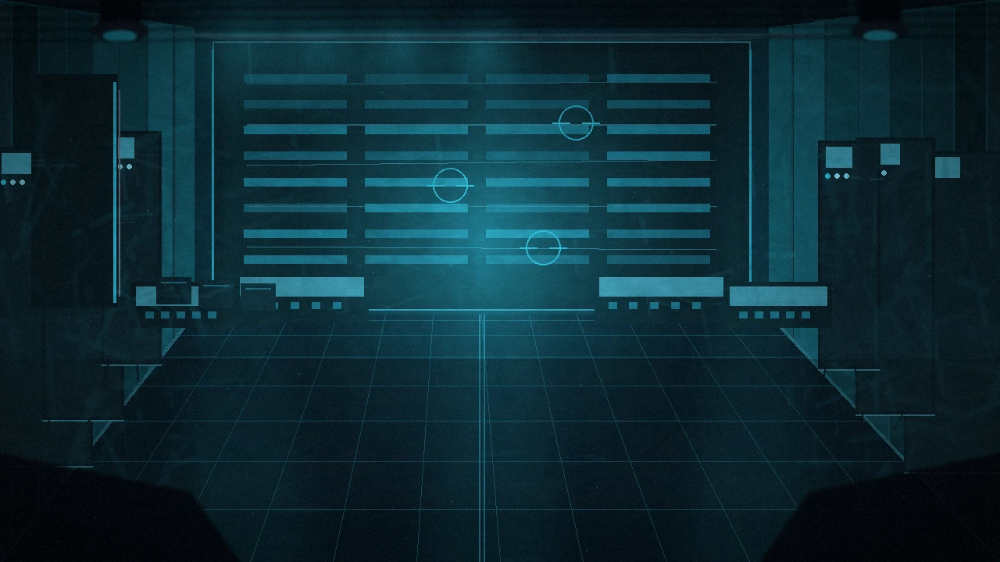

Fact sheet, copy,
assets, story.
Everything needed to describe Cyber Access Protocol accurately: the short and long copy, the cast, downloadable screens and logo, and where the game stands today.
At a glance.
| Title | Cyber Access Protocol |
|---|---|
| Release | The Last Signal — complete campaign (2026) |
| Genre | 2D side-scrolling platformer; action-adventure / educational puzzle |
| Setting | Asterion Tower, a fictional twenty-floor corporate research building |
| Protagonist | Alex Vale, junior incident-response trainee |
| Adversary | The Null Architect |
| Players | Single-player · offline-first · no account |
| Platform | Windows PC. More platforms to be announced. |
| Content | 50 levels · 40 missions · 5 chapters · 9 security disciplines · 3 endings |
| Session | 30–120 minutes; 8–15 minutes per level |
| Audience | 12+; platformer, puzzle and technology players; beginner IT learners |
| Languages | English and Urdu · full right-to-left support |
| Input | Keyboard, gamepad and touch (landscape) |
| Accessibility | Remappable controls, high contrast, three colorblind modes, larger text, reduced motion, right-to-left support, touch controls and gamepad focus |
| License | MIT |
| Release status | The full campaign is playable through Level 50. No store release date or price has been announced. |
| Price | Not announced. |
The Last Signal is complete: ten missions, nine security disciplines, ten new bosses and three endings. Every earlier chapter remains part of the same campaign.
Describe it in one line or one page.
One-line description
A 2D cyber-security action platformer about restoring a locked-down technology tower and exposing the adversary attacking its records.
Short description
Play as Alex Vale, a junior security operator trapped inside Asterion Tower. Fight through fifty levels of network, identity, cloud and intelligence incidents; restore the building's defenses; and uncover the Null Architect's campaign.
Long description
Cyber Access Protocol is a 2D cyber-security action platformer set inside Asterion Tower, a locked-down corporate research building. At 22:17 the tower detects unusual authentication activity. Doors fail closed, workstations show ransom notes, and the building's automation begins issuing contradictory orders. Alex Vale — a junior incident-response trainee with a Pulse Tool, a scanner and limited authority — has to move through the building physically, reach its systems and make the defensive decisions that bring it back.
The campaign runs from the lobby to the city core across five chapters: The Breach, Dark Network, Identity Wars, Data Apocalypse and The Last Signal. The first ten levels form a continuous escape through the tower. From Level 11, the campaign opens into standalone missions: investigate the scene, make a defensive decision, live with the consequence and face the boss. Each choice changes the room: a firewall blocks projectiles, segmentation stops a worm, monitoring reveals a hidden path, a backup makes recovery possible.
The final chapter adds nine security disciplines — intelligence, hunting, forensics, purple team, vulnerability, resilience, AI oversight, insider risk and incident command — plus the Evidence Workbench, choices that carry between missions, ten new bosses and three distinct endings. The game is offline, single-player, fully remappable, available in English and Urdu, and never simulates a real target.
What is in the game.
- 50 levels and 40 missions across five chapters.
- Five distinct chapters, each with its own palette, architecture and boss family.
- Nine security disciplines in the final chapter, from threat intelligence to incident command.
- The Evidence Workbench and Knowledge Library remember what you found.
- Three endings chosen at the Level 50 command lock.
- A Level Archive, practice mode and replay for every mission.
- A mission debrief with grade, score, evidence and confidence.
- Your progress and endings are saved locally; no account required.
- Seventy original painterly environments in the final chapter.
- English and Urdu, with keyboard, controller and touch support, plus accessibility options.
The people in the tower.
Alex Vale
Junior security engineer and incident-response trainee. Observant, practical and calm under pressure; limited authority and incomplete knowledge of the tower's architecture.
Mira Chen
Security Operations Lead. Guides triage over a damaged radio channel and keeps reminding Alex to preserve evidence.
Eli Navarro
Facilities Technician. Knows the physical routes, emergency doors, lifts and maintenance shafts — and where the hidden paths are.
NOVA
Building Assistant AI. Initially unreliable because its automation permissions were abused; trust improves as verified systems are restored.
The Null Architect
The adversary. Patient, deliberate and focused on the record itself: logs, ownership and trust. Never framed as a hero.
Download the screens and mark.
All images are screenshots from the game at 1280×720; the logo is vector SVG. The project is MIT licensed — see the LICENSE for the terms that apply.
Logo: SVG


A complete campaign, still being polished.
All fifty levels and forty missions are playable from the lobby to the city core. The story is finished; the finishing touches are not.
Release date to be announced
- A recorded soundtrack to replace the current score.
- Further visual and performance polish.
- A native-speaker review of the Urdu translation.
- More platforms and a store release, to be announced.
Game
Cyber Access Protocol
An independent game project.
Story & cast
Alex Vale, Mira Chen, Eli Navarro, NOVA and the Null Architect.
Press contact
Refer to the project repository for contact and issue reporting. No separate press inbox is published here.
Fictional setting and characters. Asterion Systems, Asterion Tower, Alex Vale, Mira Chen, Eli Navarro, NOVA and the Null Architect are fictional. The game is not a real security tool and does not interact with real systems.
Press questions, answered.
Quick answers
What is Cyber Access Protocol?
A 2D cyber-security action platformer about restoring a locked-down technology tower and uncovering the adversary attacking its records.
How long is the game?
Fifty levels and forty missions across five chapters. Most players should expect 8–15 minutes per level and 30–120 minutes per session.
When is it coming out?
The full campaign is playable now through Level 50. A store release date and price have not been announced.
Is it a real hacking game?
No. It is a fictional game about defense and recovery. It never scans a real network, runs malware, exploits a system or asks for real credentials.
See how the campaign grew.
Five chapters, from the first locked lobby to the city core.